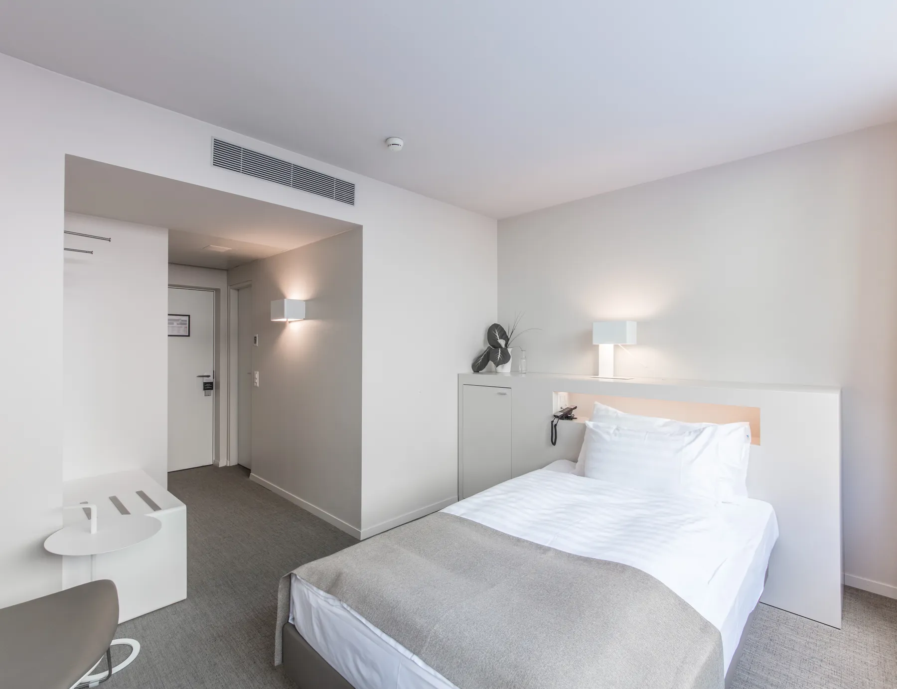
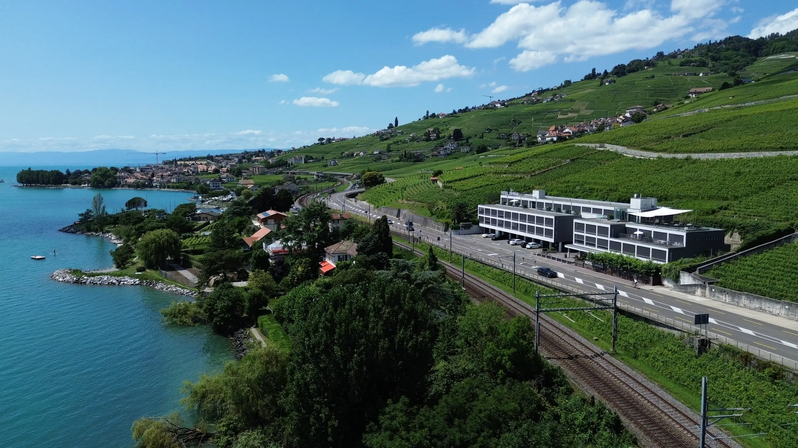
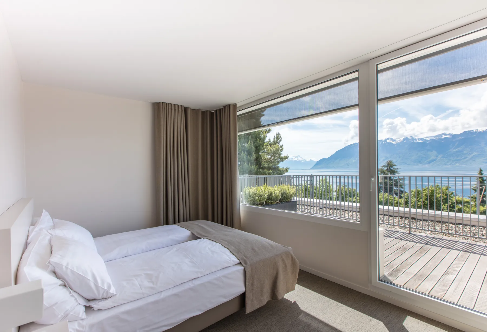
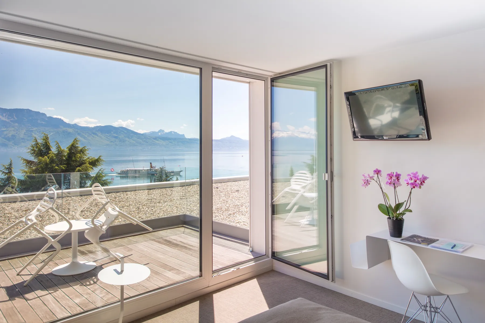
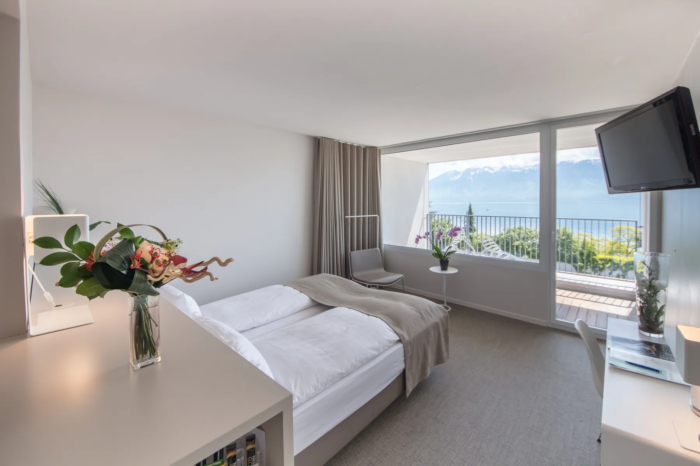
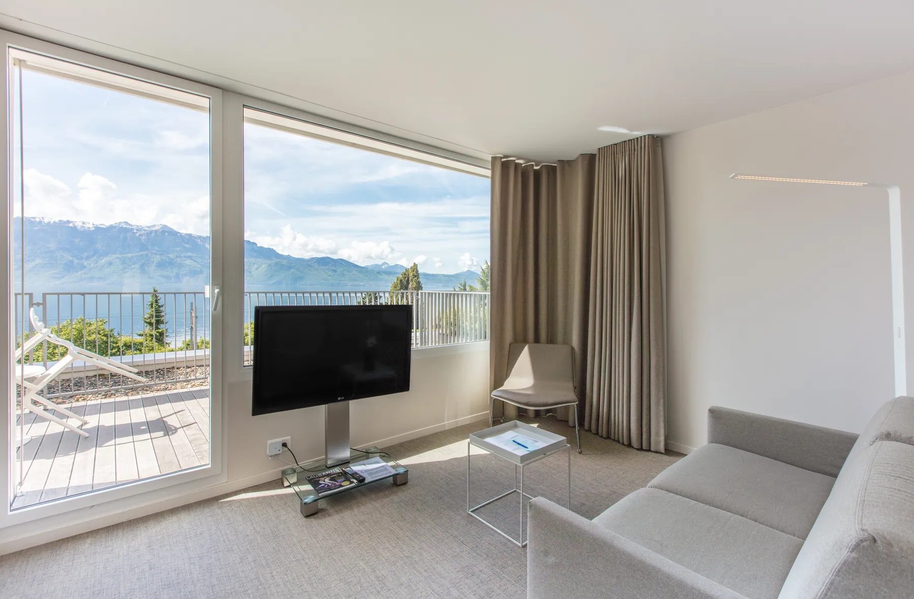
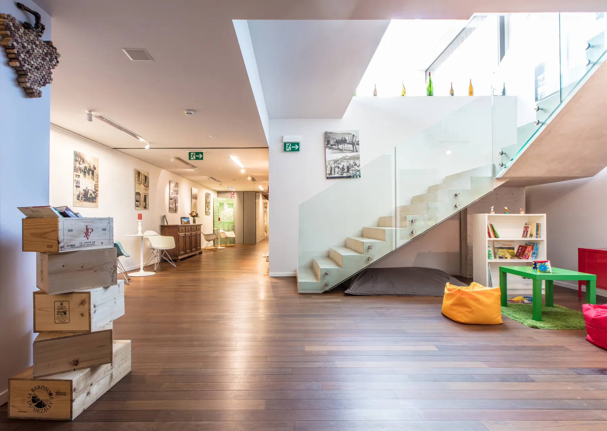
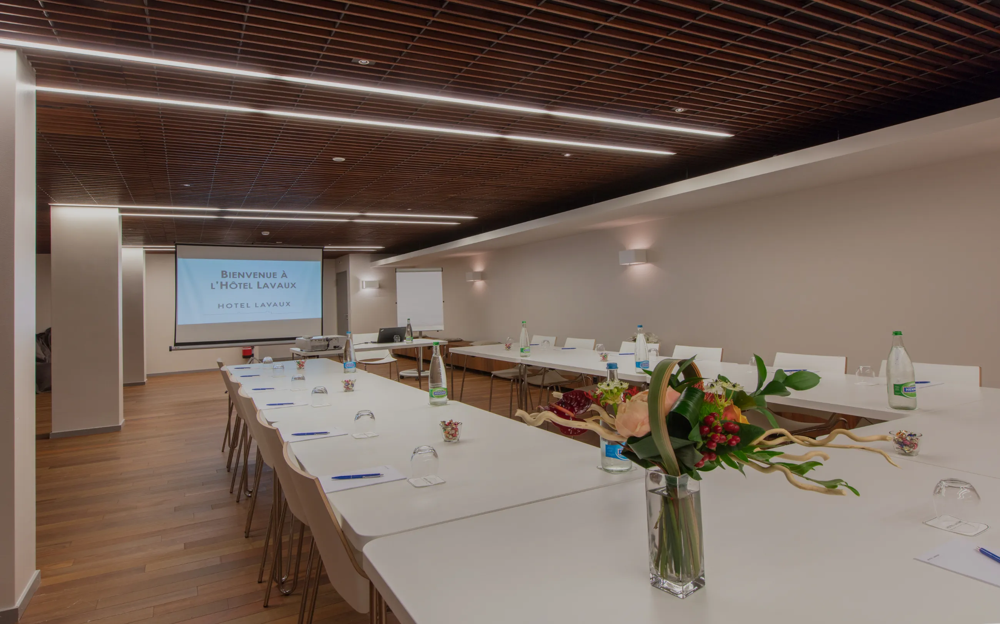

Chambre individuelle
20 m²
Lit individuel (120 × 200 cm)
Avec ou sans vue sur le lac Léman. Confort et simplicité.


C'est ainsi que son architecte, Alberto Sartoris, décrivait l'Hôtel Lavaux. 64 chambres à Cully, entre les vignes classées à l'Unesco et le Léman.
Réception ouverte 24h/24
+41 21 799 93 93 · info@hotellavaux.ch
De la chambre individuelle à la junior suite. Toutes sont équipées d'un plateau de courtoisie avec thé et café, d'un coffre-fort, d'une télévision avec chaînes satellites et de l'air conditionné.
20 m²
Lit individuel (120 × 200 cm)
Avec ou sans vue sur le lac Léman. Confort et simplicité.

22 m²
Deux lits (2 × 90 × 200 cm) ou grand lit (180 × 200 cm)
Préparée selon votre demande. Côté vignes, orientée nord ; côté lac, orientée sud et appelée « double vue lac », certaines avec balcon.

24 m²
Grand lit (180 × 200 cm)
Au troisième et dernier étage : panorama complet sur le lac et les Alpes, depuis sa terrasse panoramique.

40 m²
Deux lits (2 × 90 × 200 cm)
Deux chambres complètes avec porte communicante, pour deux adultes et deux enfants jusqu'à 12 ans.

35 m²
Grand lit (180 × 200 cm)
Une chambre avec salle de bain attenante et un salon, orientée lac, avec balcon ou terrasse.

Une réception ouverte jour et nuit, un hall lumineux, et de quoi travailler ou se détendre.

Loin d'un grand hôtel et de ses grandes infrastructures : deux salles, un vrai charme. La restauration lors de vos événements est assurée par le restaurant partenaire Masaniello, cuisine aux saveurs italiennes.

24 m² · jusqu'à 10 personnes
Au troisième étage, avec un dégagement sur le lac. Pour petites réunions, comités, conseils.
122 m² · jusqu'à 60 personnes
Une grande salle dans un style de carnotzet contemporain, pour de plus grandes réunions.
Au cœur de la région viticole de Lavaux, inscrite au patrimoine mondial de l'Unesco, entre Lausanne et Vevey.